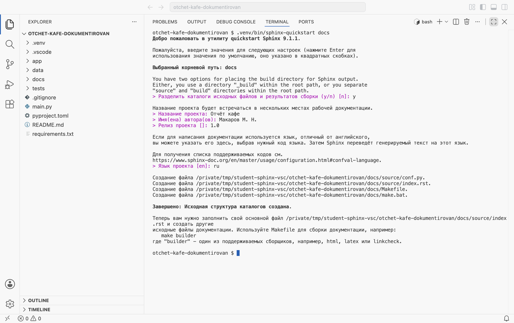
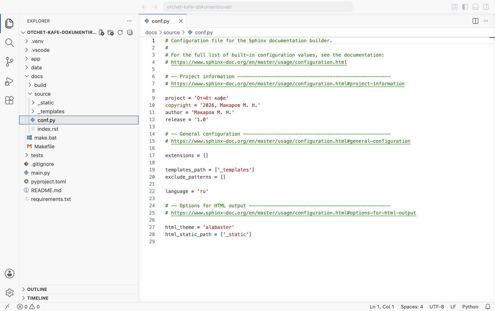
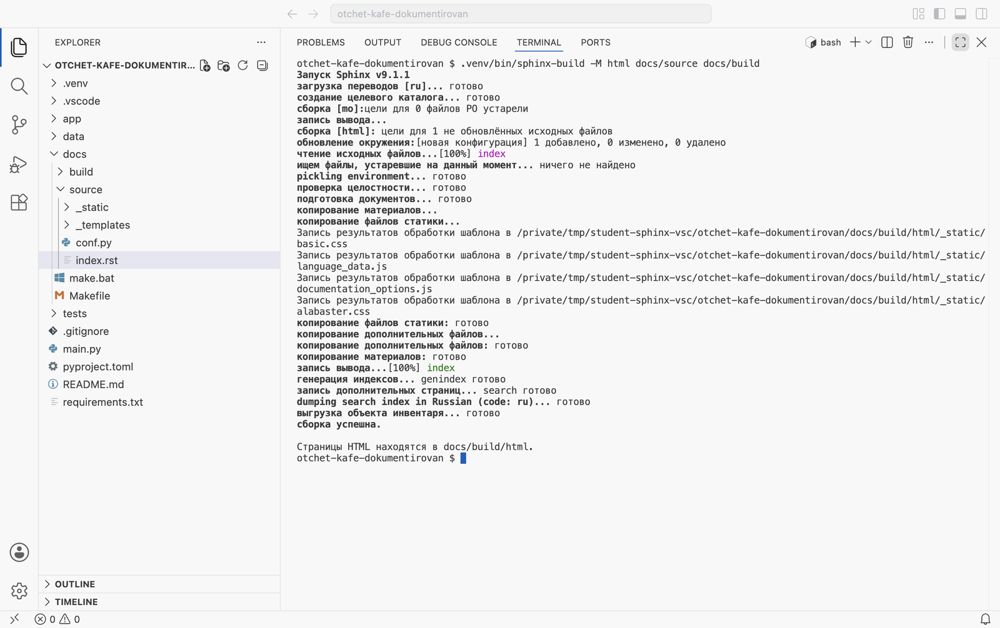

Аннотации типов и документация кода · МДК.01.01 · разработка программных модулей
Глава 4.12
Sphinx: первый запуск
и состав папок
В этой главе разобрано, что делает Sphinx и как получить первый сайт документации проекта «Отчёт кафе». Установка идёт в окружение проекта, заготовку папки docs создаёт мастер sphinx-quickstart, сайт собирает команда sphinx-build. Докстрингов на первом сайте ещё нет: их подключают в главе 4.13. В конце главы — задания, в которых сайт пересобирается после правок.
- Категория
- Теория и пошаговая работа
- Время
- Около 45 минут
- Инструмент
- Sphinx
9.1.1 - Результат
- Папка
docsи собранная главная страница
Модуль про Sphinx относится к Python. В ветке Go сайт документации строит pkgsite без настройки — он разобран в главе 4.6. Если переключатель языка стоял на Go, главы 4.12–4.16 всё равно показываются в варианте Python.
Часть 1 · Программа и проект
§1Что делает Sphinx
В главах 4.6–4.11 докстринги проекта прочитаны тремя способами: в подсказке редактора, через help() в терминале и в файле docs/help.txt. Все три способа требуют, чтобы у читателя был открыт проект или запущен Python. Для человека, который вызывает модуль из другой команды или только знакомится с проектом, удобнее сайт: оглавление, страница на каждый пакет, поиск по всем описаниям.
Sphinx — программа, которая собирает такой сайт. На вход она получает текстовые файлы в разметке reStructuredText (расширение .rst) и, через расширение autodoc, докстринги из модулей проекта. На выходе — папка с HTML-страницами, которые открываются в любом браузере без сервера. Sphinx написан на Python и ставится через pip, как Ruff и mypy.
Ассоциация: вёрстка книги
Автор пишет главы в текстовом редакторе. Верстальщик берёт рукопись, добавляет оглавление, колонтитулы, предметный указатель и выпускает книгу. Если в рукописи исправили абзац, книгу верстают заново по тем же правилам.
Рукопись — файлы .rst и докстринги в модулях. Правила вёрстки записаны в conf.py. Команда sphinx-build выпускает сайт: оглавление, страницы модулей, алфавитный указатель и поиск. После правки докстринга сайт собирают той же командой.
Где не совпадаетВерстальщик правит текст по своему усмотрению. Sphinx переносит текст докстринга как есть: пропущенное в коде условие на сайте тоже будет пропущено.
Так собирается, например, документация самого Python на docs.python.org, документация библиотек Requests, Flask и pytest. Путь от кода до страницы состоит из четырёх шагов; в этой главе пройдены первый, третий и четвёртый, шаг с докстрингами — в главе 4.13.
Путь от исходников до сайта
app/, их забирает autodoc.
глава 4.13
Шаг 2 на первом сайте пропущен: страница собирается из одного файла index.rst, модули проекта Sphinx пока не читает.
§2Проект и окружение
Работа идёт на третьем архиве темы — «Отчёт кафе» с аннотациями и докстрингами в формате Google. Это тот же проект, который получается после практики главы 4.11. Если практика сделана, можно работать в своей папке; Sphinx соберёт сайт из ваших описаний.
Распакуйте проект и откройте его в VS Code
Распакуйте третий архив в папку с проектами курса и откройте папку otchet-kafe-dokumentirovan командой File → Open Folder. Откройте терминал: Terminal → New Terminal. Приглашение терминала должно заканчиваться именем папки проекта — так все команды главы выполняются из его корня.
Создайте окружение и установите зависимости проекта
python3 -m venv .venvpy -m venv .venv, затем .venv/bin/pip install -r requirements.txt.venv\Scripts\pip install -r requirements.txt. Sphinx импортирует модули проекта, чтобы прочитать их докстринги. Поэтому он ставится в то же окружение, где лежат зависимости проекта.
Установите Sphinx
.venv/bin/pip install sphinx.venv\Scripts\pip install sphinx. Вместе со Sphinx ставятся docutils (разбор reStructuredText), Jinja2 (шаблоны страниц), Pygments (подсветка кода) и несколько служебных пакетов.
Проверьте версию: .venv/bin/sphinx-build --version.venv\Scripts\sphinx-build --version.
sphinx-build 9.1.1
Все выводы в главах 4.12–4.16 получены на версии 9.1.1. У более новой версии отдельные строки вывода могут отличаться, порядок работы тот же.
Sphinx печатает сообщения на языке системы. Выводы в книге сняты в терминале с русским языком, поэтому в них стоит «сборка успешна». На системе с английским языком та же строка выглядит как build succeeded, а предупреждение начинается словом WARNING в обоих случаях. Часть строк переведена не полностью: pickling environment и dumping search index печатаются по-английски на любом языке.
Часть 2 · Заготовка и первая сборка
§3Мастер sphinx-quickstart по шагам
Заготовку папки документации создаёт мастер sphinx-quickstart. Он задаёт несколько вопросов, по ответам пишет файл настроек conf.py, главную страницу index.rst и два файла для запуска сборки. Мастер запускается один раз на проект; дальше файлы правят руками.
Запустите мастер с именем папки docs
.venv/bin/sphinx-quickstart docs.venv\Scripts\sphinx-quickstart docs. Слово docs в конце — папка, в которой мастер создаст файлы. Без него файлы окажутся прямо в корне проекта, рядом с main.py.
Мастер печатает приветствие и строку Выбранный корневой путь: docs, затем задаёт вопросы по одному. Строка вопроса начинается со знака >, ответ по умолчанию стоит в квадратных скобках: он принимается, если нажать Enter без ответа.
Разделите исходники и результат: ответ y
Первый вопрос — Разделить каталоги исходных файлов и результатов сборки (y/n) [n]. Ответ y создаёт две папки: docs/source для того, что пишут руками, и docs/build для того, что собирает Sphinx. Тогда собранные страницы не смешиваются с исходниками, и папку сборки целиком исключают из репозитория одной строкой.
При ответе n исходники лежат прямо в docs, а результат — во вложенной папке docs/_build. Так тоже работает, но в курсе принят вариант с source и build, и пути во всех следующих главах записаны под него.
Укажите название, автора и номер выпуска
Название проекта — «Отчёт кафе»: оно появится в заголовке вкладки браузера и в шапке каждой страницы. Имя(ена) автора(ов) — ваша фамилия и инициалы, они попадут в строку об авторских правах внизу страниц. Релиз проекта — 1.0: номер выпуска, который показывается рядом с названием в некоторых темах оформления.
Выберите язык ru
Последний вопрос — Язык проекта [en]. Ответ ru переводит на русский всё, что Sphinx пишет на страницах сам: «Навигация», «Поиск», «Алфавитный указатель», подписи «Параметры» и «Результат» у функций. Текст докстрингов от этой настройки не зависит — он переносится как написан.

y, название, автор, 1.0, ru. Ниже — четыре строки Создание файла и итог Завершено: Исходная структура каталогов создана. В проводнике слева появилась папка docs.Последний абзац вывода советует собирать документацию командой make. Этот способ разобран в конце §5; в книге используется команда sphinx-build, потому что она одинаково записывается в Windows, macOS и Linux.
§4Состав папки docs
Мастер создал шесть объектов. Из них руками правят два — conf.py и index.rst; остальные нужны для запуска и для будущих расширений.
docs/ после sphinx-quickstart
make html в macOS и Linuxmake.bat htmlsphinx-buildПодчёркивание в начале имени _static и _templates отделяет служебные папки от страниц: Sphinx не ищет в них файлы .rst.

docs/source/conf.py сразу после мастера. Строки 9–12 — ответы на вопросы о проекте, строка 22 — язык. Список extensions в строке 17 пуст: модули проекта Sphinx пока не читает. Строка 27 выбирает тему оформления alabaster, она встроена в Sphinx.conf.py — обычный файл Python. Sphinx выполняет его в начале каждой сборки и берёт из него значения переменных. Поэтому в нём работают импорты и вычисления, а ошибка синтаксиса в нём останавливает сборку. Подробно файл разобран в главе 4.13.
Второй файл — главная страница:
.. Отчёт кафе documentation master file, created by sphinx-quickstart on Wed Oct 28 23:03:28 2026. You can adapt this file completely to your liking, but it should at least contain the root `toctree` directive. Отчёт кафе documentation ======================== Add your content using ``reStructuredText`` syntax. See the `reStructuredText <https://www.sphinx-doc.org/en/master/usage/restructuredtext/index.html>`_ documentation for details. .. toctree:: :maxdepth: 2 :caption: Contents:
Разбор по строкам:
- Первые четыре строки начинаются с двух точек и пробела, после которых нет имени директивы. В reStructuredText это комментарий: на страницу он не попадает.
Отчёт кафе documentationс чертой из знаков=под ним — заголовок страницы. Черта должна быть не короче текста заголовка.- Абзац
Add your content…— обычный текст. Двойные обратные кавычки``…``выделяют код, конструкция`текст <адрес>`_— ссылка. .. toctree::— директива оглавления. Под ней с отступом в три пробела идут параметры: глубина:maxdepth: 2и подпись:caption:. Ниже параметров, после пустой строки, перечисляют имена страниц. Сейчас список пуст.
Разметка reStructuredText подробно разобрана в главе 4.14. Для первой сборки достаточно знать, где заголовок и где оглавление.
§5Первая сборка
Запустите сборку
.venv/bin/sphinx-build -M html docs/source docs/build.venv\Scripts\sphinx-build -M html docs/source docs/build. Команда читается так: собрать вид html (ключ -M выбирает вид результата) из исходников в docs/source в папку docs/build.

Запись результатов обработки шаблона — служебные: Sphinx копирует стили и скрипты темы. Последние строки — итог сборка успешна. и адрес готовых страниц.Прочитайте вывод по этапам
Сборка идёт в два прохода. Первый — чтение: Sphinx находит исходники, разбирает разметку и запоминает результат во внутреннем хранилище — окружении. Второй — запись: по окружению строятся HTML-страницы, указатель и поиск.
| Строка вывода | Что произошло |
|---|---|
загрузка переводов [ru] | Подключён перевод интерфейса на язык из conf.py |
сборка [html]: цели для 1 не обновлённых исходных файлов | Найден один файл, который нужно собрать: index.rst |
чтение исходных файлов...[100%] index | Первый проход: файл разобран |
pickling environment | Результат разбора записан на диск в docs/build/doctrees, чтобы следующая сборка взяла его оттуда |
запись вывода...[100%] index | Второй проход: записан index.html |
генерация индексов... genindex | Построена страница алфавитного указателя |
запись дополнительных страниц... search | Построена страница поиска |
dumping search index in Russian | Записан поисковый индекс с учётом русских окончаний |
сборка успешна. | Ошибок и предупреждений нет. Если они есть, здесь стоит их число |
Откройте сайт в браузере
open docs/build/html/index.htmlxdg-open docs/build/html/index.htmlstart docs\build\html\index.html. Можно и через проводник VS Code: правая кнопка на файле index.html → Reveal in Finder (в Windows — Reveal in File Explorer), затем двойной щелчок по файлу.

index.rst. Слева — колонка темы: название проекта, поле поиска, раздел «Навигация» с пустым оглавлением. Внизу — строка об авторе и ссылка Page source на исходный текст страницы.Адрес в браузере начинается с file://: страница открыта прямо с диска. Сервер не нужен, поиск тоже работает — его индекс лежит в файле searchindex.js рядом со страницами.
Что появилось в папке сборки:
docs/build/ после первой сборки
Файлы Makefile и make.bat вызывают ту же команду sphinx-build -M с путями source и build. Запускают их из папки docs: cd docscd docs, затем make html.\make.bat html. Перед этим окружение должно быть активировано: внутри файлов команда записана без пути .venv. В Windows программа make обычно не установлена, поэтому для неё и создан make.bat.
§6Повторная сборка
Если запустить ту же команду ещё раз без правок, вывод будет короче:
Запуск Sphinx v9.1.1 загрузка переводов [ru]... готово загрузка фиксированного окружения... готово сборка [mo]:цели для 0 файлов PO устарели запись вывода... сборка [html]: цели для 0 не обновлённых исходных файлов обновление окружения:0 добавлено, 0 изменено, 0 удалено чтение исходных файлов... ищем файлы, устаревшие на данный момент... ничего не найдено нет устаревших целей.
Строка загрузка фиксированного окружения означает, что Sphinx взял результат прошлого разбора из docs/build/doctrees. Дальше он сравнил время изменения исходников с временем сборки и не нашёл изменённых: цели для 0 и нет устаревших целей. Страницы не переписаны.
Такая сборка называется инкрементной: пересобираются только изменённые файлы. На проекте из одной страницы разницы не видно, на сотне страниц она сокращает сборку с минут до секунд. У инкрементной сборки есть особенность, которая понадобится в главах 4.13–4.14: предупреждения в неизменённых файлах при повторе не печатаются, потому что эти файлы не перечитываются. Полную пересборку включает ключ -E: sphinx-build -M html docs/source docs/build -E.
| Что изменилось | Что пересоберёт Sphinx |
|---|---|
| Ничего | Ничего: цели для 0 |
Один файл .rst | Этот файл и страницы, где стоит ссылка на него |
conf.py | Всё: строка [новая конфигурация] в выводе |
| Только докстринг в модуле | Страницы, на которых этот модуль описан (с главы 4.13) |
Запуск с ключом -E | Всё, независимо от изменений |
§7Что из docs попадает в репозиторий
Папка docs/build получается из исходников одной командой, поэтому в Git её не кладут: каждая сборка меняет в ней десятки файлов, и история репозитория заполнилась бы изменениями, которые никто не писал. В .gitignore третьего архива уже есть строка для неё; если вы работаете в своей папке, добавьте её:
.venv/ __pycache__/ docs/build/
В репозиторий идут docs/source целиком, Makefile и make.bat. Есть одна тонкость: пустые папки Git не хранит. Папка _static после мастера пуста, и в копии репозитория, скачанной с GitHub, её не будет. Тогда сборка печатает WARNING: элемент html_static_path '_static' не существует, а сборка, в которой предупреждения считаются ошибками, на этом останавливается. Чтобы папка попала в репозиторий, в неё кладут пустой файл с именем .gitkeep: в проводнике VS Code правая кнопка на docs/source/_static → New File → .gitkeep. Имя ничего не значит для Git, это соглашение: файл держит папку в репозитории.
В проекте есть папка docs, команда sphinx-build -M html docs/source docs/build отвечает сборка успешна., главная страница открывается в браузере.
На сайте пока только текст из index.rst, докстрингов проекта на нём нет. Их подключает расширение autodoc в главе 4.13.
§8Соберите сами
Задания выполняются в той же папке проекта. Каждое заканчивается сборкой и проверкой в браузере: после сборки страницу в браузере нужно обновить (CtrlCmd + R). Команды ниже записаны коротко — в терминале с активированным окружением: source .venv/bin/activate.venv\Scripts\Activate.ps1 в PowerShell.
Соберите сами · главная страница
Четыре опыта: своя главная страница, ошибка разметки, язык интерфейса и полная пересборка. Ожидаемые результаты сняты на третьем архиве.
Своя главная страница
- Откройте
docs/source/index.rst. - Замените заголовок
Отчёт кафе documentationнаОтчёт кафеи укоротите черту под ним до длины заголовка — десять знаков=. - Абзац
Add your content…из трёх строк замените своим описанием проекта в одну-две фразы. - В оглавлении замените
:caption: Contents:на:caption: Содержание:. - Сохраните файл и выполните
sphinx-build -M html docs/source docs/build.
Отчёт кафе ========== Программа читает файл смены кафе, считает выручку по официантам и печатает отчёт. .. toctree:: :maxdepth: 2 :caption: Содержание:
В выводе — цели для 1 не обновлённых исходных файлов и запись вывода...[100%] index: пересобрана одна страница. После обновления браузера заголовок и абзац новые.

index.rst.Черта короче заголовка
- Укоротите черту под заголовком до пяти знаков:
=====. - Соберите сайт.
- Верните черту длиной в заголовок и соберите ещё раз.
Сборка проходит, но итог меняется на сборка успешна, 1 предупреждение., а в конце вывода стоит само предупреждение:
сборка успешна, 1 предупреждение. Страницы HTML находятся в docs/build/html. …/docs/source/index.rst:7: WARNING: Title underline too short. Отчёт кафе ===== [docutils]
Строка предупреждения читается слева направо: файл, номер строки 7 (черта), уровень WARNING, текст «черта заголовка слишком короткая», ниже — фрагмент исходника, в квадратных скобках — источник замечания: docutils, библиотека разбора reStructuredText. Многоточие в начале пути — сокращение в книге, у вас там будет полный путь к папке проекта. После возврата черты предупреждение пропадает.
Язык интерфейса
- В
docs/source/conf.pyзаменитеlanguage = 'ru'наlanguage = 'en'. - Соберите сайт и обновите страницу в браузере.
- Верните
'ru'и соберите с ключом-E.
В выводе первой сборки после правки стоит строка сборка [html]: несоответствие build_info, копирование .buildinfo в .buildinfo.bak: Sphinx заметил, что изменились настройки, и пересобрал всё. На странице «Навигация» сменилась на Navigation, кнопка поиска — на Go. Текст, написанный в index.rst, остался русским.

language = 'en': переведены только подписи темы.Сборка с нуля
- Выполните сборку два раза подряд без правок и сравните начало вывода.
- Удалите папку
docs/buildцеликом:rm -rf docs/buildRemove-Item -Recurse docs\build. - Соберите ещё раз и откройте сайт.
Вторая сборка без правок печатает цели для 0 и нет устаревших целей. После удаления папки вывод снова начинается со строки создание целевого каталога... готово, сайт открывается как прежде. Из этого опыта видно, что папку build можно удалить в любой момент: всё в ней восстанавливается из source.
§9Проверьте себя
Почему Sphinx ставят в окружение проекта?
Чтобы прочитать докстринги, Sphinx импортирует модули проекта. Импорт пройдёт, только если рядом установлены все зависимости проекта, то есть в его окружении.
Какие два файла из docs правят руками?
docs/source/conf.py — настройки сборки и docs/source/index.rst — главная страница с корневым оглавлением. Дальше к ним добавляются свои файлы .rst.
Что означают три части команды sphinx-build -M html docs/source docs/build?
-M html — вид результата, docs/source — откуда брать исходники и conf.py, docs/build — куда писать. Готовый сайт окажется в docs/build/html.
Почему папку docs/build не добавляют в репозиторий?
Всё в ней получается из docs/source и кода проекта одной командой. Хранить её в Git — значит при каждой сборке получать десятки изменённых файлов, которых никто не писал.
Когда нужен ключ -E?
Когда нужно пересобрать всё и увидеть все предупреждения. Без ключа Sphinx перечитывает только изменённые файлы и предупреждения в остальных не повторяет.
pip install sphinx
sphinx-build --version
sphinx-quickstart docs
y · название · автор · 1.0 · ru
sphinx-build -M html docs/source docs/build
-E — пересобрать всё
docs/build/html/index.html
открывается без сервера
docs/source/conf.py
docs/source/index.rst
docs/build/
Итог главы
Sphinx собирает сайт документации из файлов reStructuredText и докстрингов проекта. Его ставят в окружение проекта, потому что для чтения докстрингов он импортирует модули. Заготовку создаёт мастер sphinx-quickstart docs: при ответе y на первый вопрос исходники лежат в docs/source, результат — в docs/build. Руками правят conf.py с настройками и index.rst с главной страницей и оглавлением. Сборка запускается командой sphinx-build -M html docs/source docs/build, готовый сайт открывается из docs/build/html/index.html без сервера. Повторная сборка пересобирает только изменённые файлы, ключ -E пересобирает всё. Папка docs/build в репозиторий не попадает. На первом сайте нет описаний функций: их подключает глава 4.13.
- Установка, мастер и первая сборка — Sphinx, Getting started.
- Ключи команды сборки, в том числе
-Mи-E— sphinx-build. - Настройка
language— Sphinx, Configuration. - Все выводы и кадры сайта получены на Sphinx 9.1.1 сценарием
shots/sphinx_run.pyна третьем архиве темы.